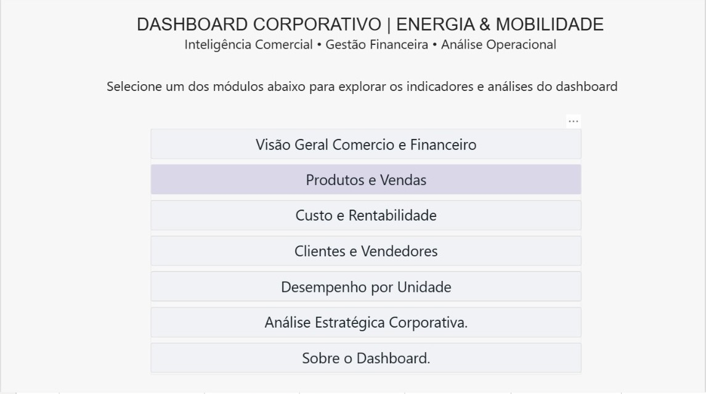
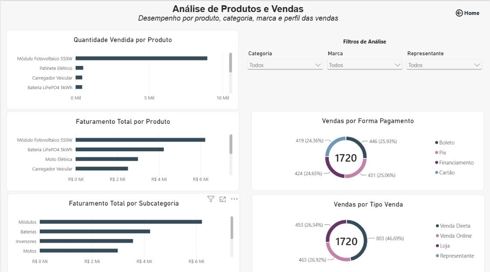
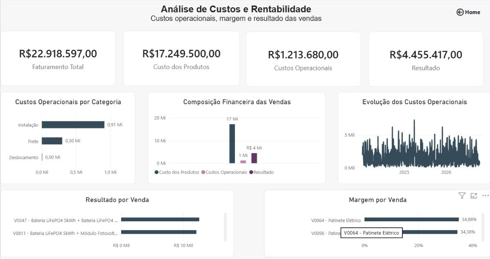
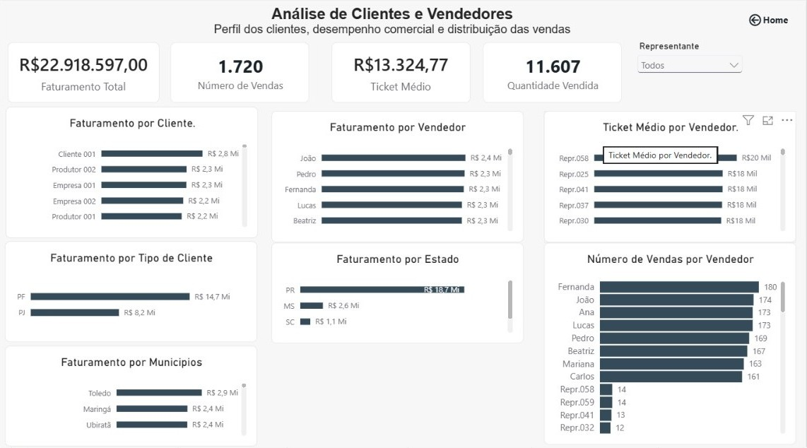
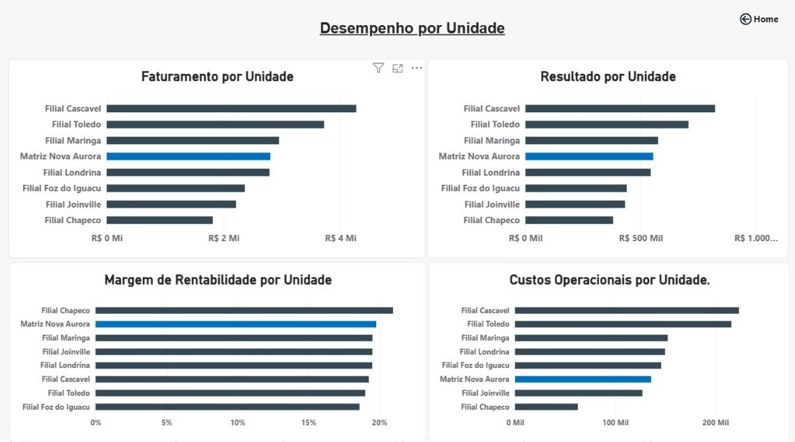
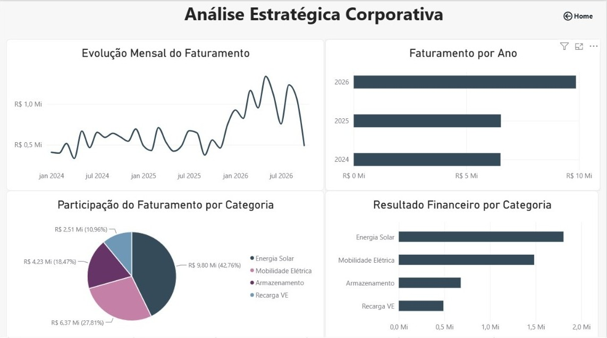
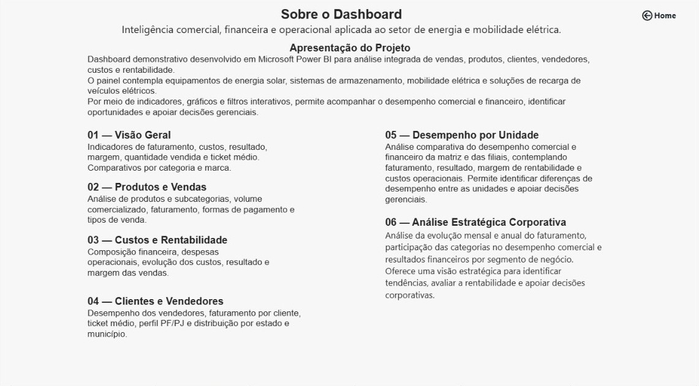

Visão Geral do Projeto
Projeto demonstrativo desenvolvido em Power BI para análise de indicadores comerciais, financeiros e operacionais de uma organização com múltiplas unidades.
O relatório reúne indicadores de faturamento, custos, rentabilidade, produtos, clientes, vendedores e desempenho por unidade, permitindo análises comparativas.
Dados fictícios utilizados para fins de portfólio.
Galeria do Dashboard







